Análisis: del diseño a la conclusión
El corazón de SigmaPro: 74 análisis en 17 familias, del análisis de varianza de un diseño experimental a los modelos mixtos, la supervivencia y las series de tiempo (los otros 4 resúmenes están en Explorar, capítulo 3). Se eligen con el asistente, en el catálogo o en el constructor de modelos, y todos responden igual: conclusión en palabras, cuadros, gráficas, supuestos, el código R que da los mismos números y su ficha en Fundamentos.
- 4.1Tres maneras de elegir un análisis
- 4.2El asistente
- 4.3El catálogo
- 4.4El constructor de modelos
- 4.5Cómo se lee un resultado
- 4.6El motor R dentro del navegador
- 4.7–4.11Supuestos, pruebas, diseños y medias
- 4.12–4.17Regresión, contingencia, mixtos y generalizados
- 4.18–4.24No lineal, multiambiente, multivariado, muestreo, supervivencia y series
4.1Tres maneras de elegir un análisis
Arriba del bloque, tres botones eligen cómo se llega al análisis. Las tres llevan al mismo lugar (el mismo método con las mismas opciones) y se puede pasar de una a otra en cualquier momento.
| Manera | Para quién | Sección |
|---|---|---|
| Asistente | Para quien sabe qué quiere saber de su ensayo pero no qué análisis usar. Unas cuantas preguntas en lenguaje del campo (¿qué mediste?, ¿agrupaste en bloques?, ¿algún factor se aplicó a parcelas grandes?) y una recomendación con sus razones. Es el modo con que abre el bloque. | 4.2 |
| Catálogo | Para quien ya sabe qué análisis quiere: la lista completa, agrupada por familias, con el formulario de cada método. | 4.3 |
| Constructor de modelo | Para quien piensa en términos de modelo: se arrastran las variables a sus papeles (respuesta, factores, bloques, aleatorios, covariables…) y la app escribe la fórmula y elige el análisis. La fórmula también se puede escribir a mano. | 4.4 |
Junto a los tres botones, Historial lista los últimos análisis calculados, con sus variables y sus datos; elegir uno lo vuelve a abrir (sección 1.1). Sin datos cargados, el bloque ofrece cargarlos ahí mismo (Importar un archivo, Pegar una tabla o Probar con un ejemplo) o ir a Datos; los cálculos que no necesitan datos (tamaño de muestra, potencia, repeticiones) se abren con Calcular un tamaño de muestra o una potencia, aquí o en Explorar, que deja elegido Potencia y tamaño de muestra: medias (prueba t) (sección 4.22). Si en Datos hay un filtro activo, todo el bloque trabaja con las filas que lo pasan.
4.2El asistente
El asistente hace las preguntas que haría un estadístico al ver un ensayo por primera vez, en orden, y solo las que hacen falta: cada respuesta decide la siguiente pregunta. A la derecha, la recomendación se actualiza con cada respuesta. Las respuestas vienen ya propuestas a partir de los datos (lo que la tarjeta de la sección 2.13 reconoce), así que muchas veces basta con revisarlas.
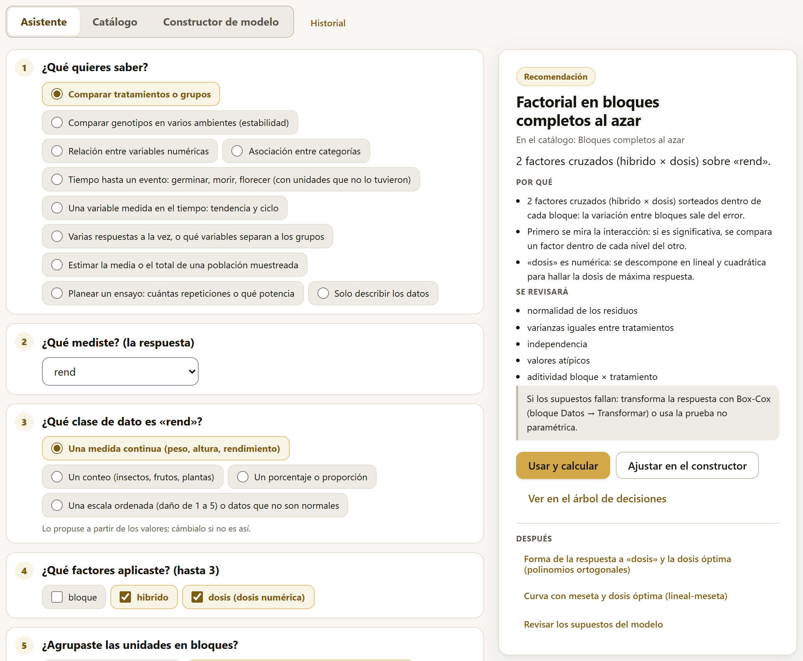
Las preguntas
La primera pregunta, ¿Qué quieres saber?, abre uno de diez caminos:
| Objetivo | Qué pregunta después y qué suele recomendar |
|---|---|
| Comparar tratamientos o grupos | La respuesta y su clase (continua, conteo, porcentaje, escala ordenada), los factores (hasta 3), los bloques (ninguno, en una dirección, en dos, incompletos), si hubo parcelas grandes o franjas, si hay una covariable medida antes del tratamiento, si se midió la misma unidad en varias fechas, si los bloques son aleatorios y cómo comparar (todos contra todos, contra un testigo, contrastes, o la curva de una dosis). Recomienda el diseño que corresponde (secciones 4.10 y 4.11), una ANCOVA, unas medidas repetidas, un modelo mixto, un modelo generalizado o una prueba no paramétrica. |
| Comparar genotipos en varios ambientes | Respuesta, genotipo, ambiente, repeticiones y qué interesa: el análisis conjunto, la estabilidad, AMMI o GGE (sección 4.20). |
| Relación entre variables numéricas | Si hay una respuesta que explicar: con un predictor, la forma (recta, curva, crecimiento, dosis-respuesta, meseta); con varios, todos, paso a paso, todas las combinaciones o una superficie de respuesta. Sin respuesta: una correlación, parcial si se descuentan otras variables (secciones 4.12, 4.13, 4.18 y 4.19). |
| Asociación entre categorías | Si son casos distintos, el mismo caso clasificado dos veces, dos evaluadores o una asociación en varios lotes, y si los datos ya vienen contados (sección 4.14). |
| Tiempo hasta un evento | El tiempo, el evento (1 sí, 0 censura), si se comparan grupos y si hay covariables: Kaplan-Meier o Cox (sección 4.23). |
| Una variable medida en el tiempo | La serie, el tiempo y qué interesa: tendencia, ciclo o autocorrelación (sección 4.24). |
| Varias respuestas a la vez | MANOVA o discriminante (sección 4.21). |
| Estimar la media o el total de una población muestreada | La variable y si hubo estratos (sección 4.22). |
| Planear un ensayo | Qué variable se medirá, para tomar su variación de los datos cargados: número de repeticiones o potencia (sección 4.22). |
| Solo describir los datos | Lleva al bloque Explorar (capítulo 3). |
La recomendación
La tarjeta de la derecha trae el análisis recomendado y todo lo necesario para decidir si se acepta:
- el título y, debajo, con qué nombre aparece en el catálogo;
- una frase con lo que se va a analizar (2 factores cruzados (híbrido × dosis) sobre «rend»);
- Por qué: las razones, en términos del ensayo (la variación entre bloques sale del error; «dosis» es numérica: se descompone en lineal y cuadrática);
- Se revisará: los supuestos que el análisis pone a prueba, y un recuadro con qué hacer si fallan;
- avisos, cuando algo de los datos merece atención;
- los botones Usar y calcular, que abre el análisis en el catálogo ya con sus variables, y, cuando aplica, Ajustar en el constructor, que lo lleva al constructor de modelos (sección 4.4), y Ver en el árbol de decisiones, que muestra el camino que lleva a ese análisis entre todos los demás (sección 9.3);
- Después: los análisis que suelen seguir (la comparación de medias, la curva de la dosis, la revisión de los supuestos), cada uno como un botón que lo abre directamente.
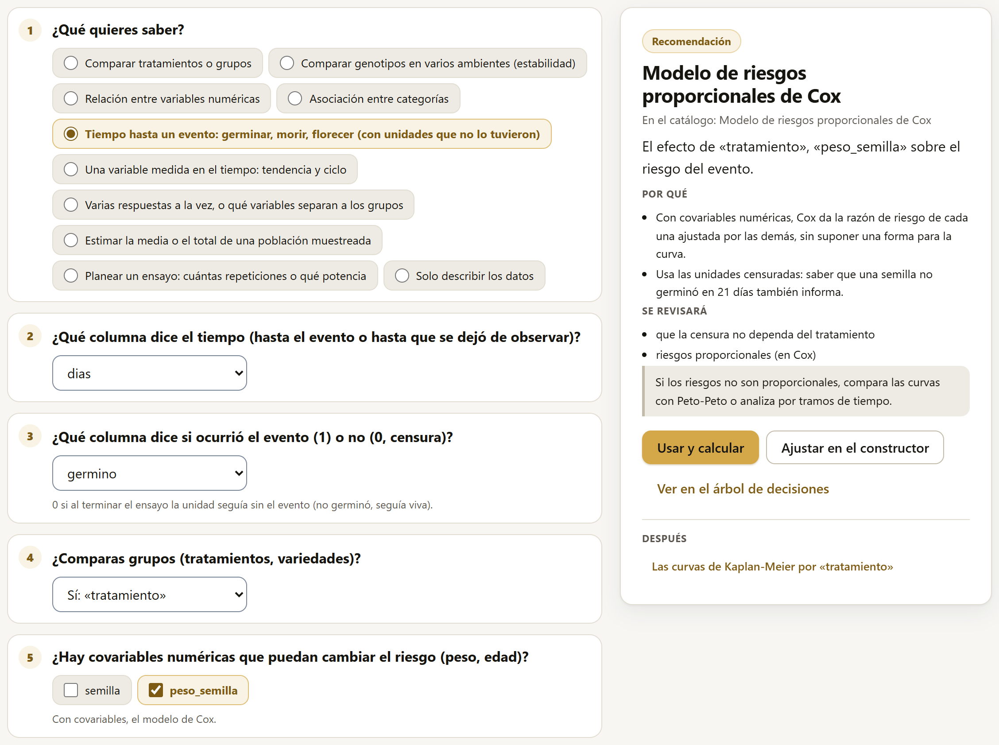
Dos preguntas merecen especial cuidado, porque los datos casi nunca las contestan (sección 2.13): si algún factor se aplicó a parcelas grandes (riego, labranza, fecha de siembra: entonces son parcelas divididas o franjas, y cada factor tiene su propio error) y si la misma unidad se midió varias veces (medidas repetidas). Responderlas mal no produce un error visible, sino pruebas F equivocadas.
La excepción son las parcelas: si la tabla trae una columna que las numera (parcela, subparcela, franja…), el asistente reconoce en los datos las parcelas divididas (un factor que no cambia dentro de cada parcela del bloque), las subdivididas y las franjas, las propone en su pregunta y en la recomendación dice lo que vio. Sin bloques, la parcela queda como la repetición de cada parcela grande. Lo que contestes en la pregunta manda. El ejemplo «Trigo: riego × variedad» viene así.
4.3El catálogo
El catálogo muestra los 74 análisis del bloque, agrupados en sus 17 familias, y dice cuáles se pueden hacer con la tabla cargada.
Arriba, dos tarjetas leen los datos:
- Con tus datos: lo que hay en la tabla (filas, columnas numéricas, factores con sus niveles, bloques, parcelas, fechas, conteos, proporciones y columnas 0/1) y cuántos análisis se pueden hacer con ella (con el maíz, «Puedes hacer 57 de los 74 análisis del catálogo con esta tabla.»).
- Recomendado para tus datos: el análisis que propone el asistente con lo que ve en la tabla, con su porqué y, en Después:, los análisis que suelen seguir, cada uno como un botón. Con las preguntas del asistente se afina la elección (sección 4.2).
Abajo, cada familia muestra sus análisis en tarjetas, con la ilustración del análisis, su nombre, para qué sirve y su estado: Listo con tus datos; Le falta, con lo que falta (con el maíz, la MANOVA dice «Falta: al menos dos respuestas numéricas.»); o No necesita datos. Los que corren en el motor R lo dicen (motor R, sección 4.6). El ícono ⓘ de cada tarjeta abre la ficha del análisis en Fundamentos (capítulo 9). Junto al nombre de cada familia se lee cuántos de sus análisis se pueden hacer (con el maíz, Diseños experimentales dice «8 de 9 con tus datos»).
Tres controles acotan la lista: la búsqueda por texto (Buscar: Tukey, bloques, conteos, regresión…), la casilla Solo los que puedo hacer con mis datos, que se recuerda, y el selector de familia (Todas las familias).
Un clic en una tarjeta abre el análisis: el catálogo se recoge en una barra con el Análisis elegido y el botón Ver el catálogo (74 análisis) para volver a abrirlo, y debajo aparecen, a la izquierda, su formulario (el modelo del experimento: qué columna es la respuesta, cuáles son los tratamientos, el bloque y las opciones) y, a la derecha, el resultado, que se recalcula al cambiar cualquier campo. Sin datos cargados, el catálogo solo ofrece los cálculos que no los necesitan: el tamaño de muestra y la potencia (sección 4.22).
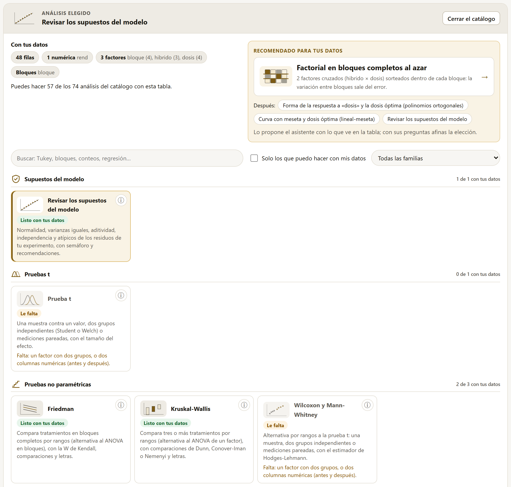
Al abrir un método, la app propone las variables de su formulario a partir de los datos (la respuesta, los factores, el bloque que reconoce), igual que el asistente. Con otra tabla, las propuestas se rehacen; con cambios en la misma tabla, se respetan las elecciones hechas.
Un método aparece en el catálogo solo si todos sus casos de validación contra R pasaron (capítulo 8). Si por alguna razón uno no estuviera validado, en su lugar se lee «Este análisis todavía no tiene su validación contra R aprobada». Es la regla de exactitud de la sección 1.2 aplicada a la interfaz.
Las secciones 4.7 a 4.24 recorren las familias en el orden del catálogo. Para cada método se explica para qué sirve, qué pide el formulario, qué entrega y cuál es su equivalente en R.
4.4El constructor de modelos
El constructor parte de una idea sencilla: un análisis es un modelo, y un modelo dice qué papel tiene cada variable. A la izquierda están las variables de la tabla; a la derecha, ocho zonas, una por papel. Debajo, la fórmula que resulta y el análisis que la app eligió para ella.
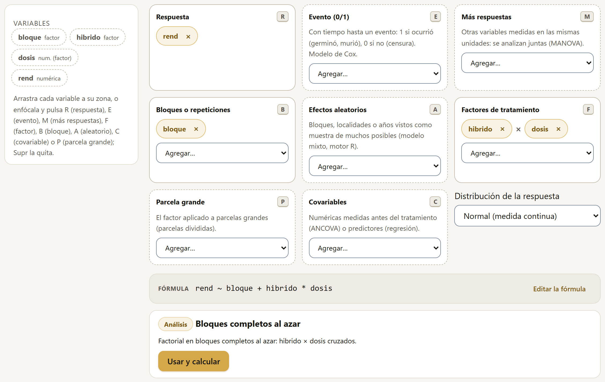
rend ~ bloque + hibrido * dosis y el análisis, bloques completos al azar.Poner cada variable en su zona
Hay tres formas, para que funcione con ratón, con teclado y en el celular:
- arrastrar la variable de la lista a la zona;
- elegirla en el menú Agregar… de cada zona;
- con la variable enfocada (con Tab o un clic), pulsar la tecla de la zona: R, E, M, B, A, F, P o C. Supr la quita de su zona.
Una variable ya usada se ve atenuada en la lista; la ✕ de cada ficha la regresa. Las zonas que solo admiten numéricas (respuesta, evento, más respuestas, covariables) solo ofrecen esas en su menú.
| Zona | Tecla | Para qué |
|---|---|---|
| Respuesta | R | La variable que se midió (o el tiempo hasta un evento). |
| Evento (0/1) | E | Con tiempo hasta un evento: 1 si ocurrió (germinó, murió), 0 si no (censura). Arma el modelo de Cox. |
| Más respuestas | M | Otras variables medidas en las mismas unidades, para analizarlas juntas (MANOVA). |
| Bloques o repeticiones | B | Uno (bloques completos), o dos (filas y columnas: cuadro latino). |
| Efectos aleatorios | A | Bloques, localidades o años vistos como muestra de muchos posibles: modelo mixto, en el motor R. |
| Factores de tratamiento | F | Los factores que se aplicaron; varios se cruzan (×). |
| Parcela grande | P | El factor que se aplicó a parcelas grandes (parcelas divididas); debe estar también en los factores. |
| Covariables | C | Numéricas medidas antes del tratamiento (ANCOVA) o predictores (regresión). |
El selector Distribución de la respuesta dice cómo es la respuesta: Normal (una medida continua), Conteo (Poisson) o Positiva y asimétrica (gamma). Las dos últimas llevan a los modelos lineales generalizados (sección 4.17).
Qué análisis elige
La app lee las zonas y elige el análisis del catálogo que corresponde, con la misma lógica que un estadístico:
| Si las zonas tienen… | …el análisis es |
|---|---|
| Factores, sin bloques | Completamente al azar (factorial si son varios) |
| Factores y un bloque | Bloques completos al azar |
| Factores y dos bloques (fila y columna) | Cuadro latino (hasta dos factores) |
| Dos factores, uno en parcela grande, y un bloque | Parcelas divididas (con dos bloques, en cuadro latino) |
| Tres factores, uno en parcela grande, y un bloque | Parcelas subdivididas |
| Solo covariables | Regresión lineal (con bloques, el modelo lineal general) |
| Factores y covariables (hasta 2 y 2, con un bloque como máximo) | ANCOVA |
| Algún efecto aleatorio | Modelo lineal mixto (motor R); con parcela grande, también su error (1 | bloque:parcela) |
| Distribución de conteo o gamma | Modelo lineal generalizado; con aleatorios, el generalizado mixto (de Poisson o gamma, en el motor R) |
| Un evento | Modelo de Cox (el bloque como estrato); sin factores ni covariables, Kaplan-Meier |
| Más respuestas | MANOVA (con el bloque y los factores cruzados) |
| Cualquier otra combinación (más de tres factores, covariables con parcelas…) | El modelo lineal general, con un aviso |
Debajo de la fórmula, el recuadro del análisis lo nombra, explica la decisión («Factorial en bloques completos al azar: hibrido × dosis cruzados») y trae Usar y calcular, que lo abre en el catálogo con todo ya puesto.
Escribir la fórmula a mano
Editar la fórmula cambia la fórmula por un campo de texto con la notación de R. Mientras se escribe, la app explica cada término: qué variable es, si es un factor o una covariable, si es una interacción o un efecto anidado.
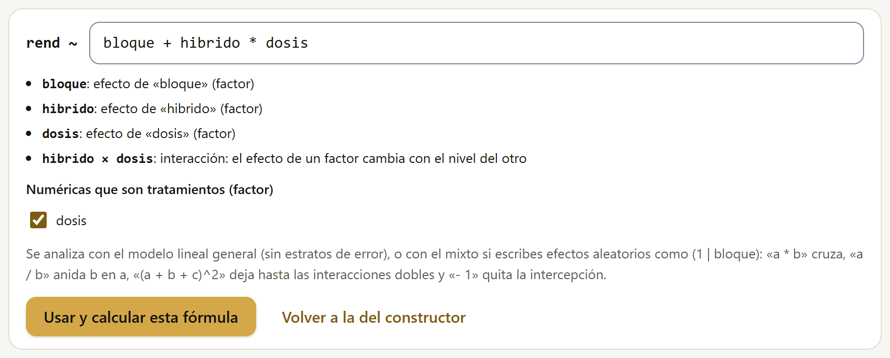
| Se escribe | Significa |
|---|---|
a + b | Los efectos principales de a y b. |
a * b | Cruza: a, b y su interacción a × b. |
a:b | Solo la interacción. |
a / b | Anida b dentro de a. |
(a + b + c)^2 | Los efectos principales y todas las interacciones dobles. |
- 1 | Quita la intercepción. |
(1 | bloque) | Un efecto aleatorio: la fórmula se ajusta con el modelo mixto en el motor R. |
Las casillas Numéricas que son tratamientos (factor) dicen qué columnas numéricas se tratan como factor (una dosis con cuatro niveles) y cuáles como covariable. Usar y calcular esta fórmula la analiza con el modelo lineal general (sin estratos de error: para unas parcelas divididas conviene el método propio) o, si tiene efectos aleatorios, con el modelo mixto; con distribución de conteo o gamma, con el modelo generalizado. Volver a la del constructor deshace lo escrito. Con un evento o con varias respuestas, la fórmula sale de las zonas y no se edita a mano.
Cuando el modelo no se puede armar
Si las zonas piden algo que ningún análisis de SigmaPro hace, el recuadro no ofrece un análisis sino el problema y su arreglo:
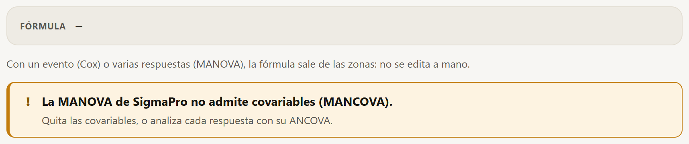
4.5Cómo se lee un resultado
Los resultados del bloque Análisis tienen las partes de los de Explorar (sección 3.2) y algunas más. La figura 4.7 muestra la parte de arriba del análisis del maíz en bloques completos al azar, y la 4.8, sus dos primeros cuadros.
![El resultado del análisis de bloques completos al azar del maíz: el título con el tiempo de cálculo, ¿Qué es este análisis?, Presentar y Agregar al reporte; los botones del nivel de detalle Básico, Estándar y Experto, con Estándar marcado; el recuadro En pocas palabras: el rendimiento cambia con el híbrido, más alto en H-66, 6.36, y más bajo en H-40, 5.53, y con la dosis, más alto en 120, 6.74, y más bajo en 0, 4.47, el efecto del híbrido no depende de la dosis y el error experimental es el 3.6 % de la media general, un CV bajo; la conclusión: híbrido y dosis con diferencias, la interacción sin evidencia, media general 5.938, CV 3.6 % y R² 0.969; la gráfica de interacción híbrido × dosis con una línea por dosis; y el botón Comparar las medias de este diseño](../img/b4-resultado.png)
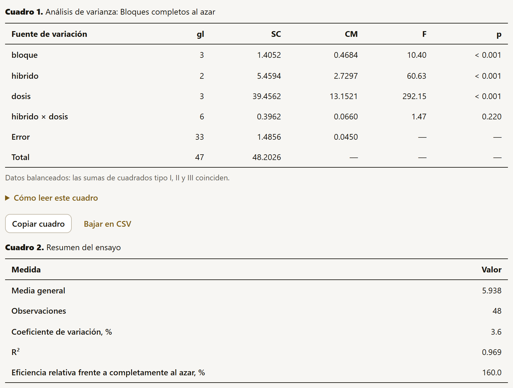
| Parte | Qué es |
|---|---|
| Título | El análisis, con el tiempo de cálculo, ⓘ ¿Qué es este análisis?, que abre su ficha en Fundamentos (capítulo 9), Presentar, que lo muestra como diapositivas (más abajo), y Agregar al reporte. |
| Nivel de detalle | Bajo el título, Básico, Estándar y Experto: cuánto del resultado se ve (más abajo, «Tres niveles de detalle»). |
| En pocas palabras | Un recuadro con el resultado sin símbolos estadísticos, en hasta cuatro frases (más abajo, «En pocas palabras»). |
| Conclusión | Una frase por efecto o por resultado clave, con su estadístico y su valor p: «hibrido: hay diferencias (F = 60.635, p < 0.001)». Al final, los indicadores de ajuste (media general, CV, R²). |
| Semáforo de los supuestos | En las pruebas que dependen de supuestos (pruebas t, regresión, ANCOVA, modelos generalizados…), un renglón por supuesto en verde, ámbar o rojo, con su ícono y la prueba que lo decide (sección 4.7); si alguno falla, Probar la alternativa ofrece el análisis que lo atiende. En los diseños, el análisis de varianza no trae semáforo: sus supuestos se revisan con Revisar los supuestos del modelo (sección 4.7); en el reporte, los de completamente al azar y bloques completos al azar se revisan solos. |
| Gráficas | Las que corresponden al análisis: la interacción de dos factores, las medias con su error estándar, la recta de regresión con sus bandas, el diagnóstico de los residuos, las curvas de supervivencia… Arriba, el selector Tema de las gráficas cambia el estilo de todas a la vez (los seis temas están en el cuadro 6.1). Cada gráfica tiene su leyenda y el botón ✎ del editor de figuras (capítulo 6). |
| Siguiente paso | Botones que llevan al análisis que suele seguir: Comparar las medias de este diseño en los diseños, Analizar el modelo elegido tras una selección de variables, el CSV para otras apps en el multivariado. |
| Cuadros | Numerados, cada uno con Copiar cuadro y Bajar en CSV (con los números completos, sin el redondeo de la pantalla): el análisis de varianza, el resumen del ensayo, las medias, las comparaciones… Un cuadro más ancho que la pantalla se desplaza a los lados; con el teclado, Tab lo enfoca y las flechas lo recorren. |
| Cómo leer este cuadro | Plegado bajo cada cuadro que trae un estadístico con guía de lectura: un medidor por estadístico con su tarjeta de interpretación y la curva de referencia de cada prueba (figuras 4.9 y 4.10, más abajo). |
| Cómo reportarlo (APA) | Plegado después de los cuadros: los párrafos de métodos y de resultados con el estilo APA 7, en español y en inglés, listos para copiar (más abajo). |
| Código R equivalente | Plegado al final, con Copiar el código. |
| Continúa en la suite LABG | Al pie de algunos análisis, una franja con la app de la suite que continúa el trabajo: AgriDesign tras un diseño experimental, CorrelationPro y PCAPro tras una correlación o una regresión, PCAPro y ClusteringPro tras el multivariado o el multiambiente. Cada tarjeta dice por qué conviene y se puede ocultar (capítulo 10). |
Cómo leer este cuadro
Bajo cada cuadro que trae un estadístico con guía de lectura publicada va un desplegable cerrado, Cómo leer este cuadro. Se dibuja al abrirlo, así que no hace más lento el resultado. Trae dos cosas:
- Un medidor por estadístico. Una regla dividida en las zonas de su guía, con un triángulo en el valor de cada renglón del cuadro (con más de doce valores, puntos y la cuenta por zona). Abajo van el valor con su zona y la guía que la define, con una nota cuando la guía tiene matices. Las zonas de magnitud (el p, los tamaños del efecto, la R²) van en dorados, de claro a oscuro; las de calidad (el CV, la colinealidad, los residuos), en verde, ámbar y rojo, como el semáforo de los supuestos. El cuadro 4.1 reúne las guías.
- La tarjeta de interpretación de cada medidor. Unas frases que traducen el valor con los números del caso: qué parte de la variación explica la R², a cuánto equivale la desviación estándar del error según el CV y la media general, cuántas veces las repeticiones da la eficiencia relativa, cuántas desviaciones estándar separan dos medias, qué tan seguido saldría un resultado así si no hubiera efecto (el p)… Con varios valores dice cuáles caen en cada zona: los términos con p < α, los residuos que pasan de ±2 y de ±3, las observaciones que pasan de 4/n en la distancia de Cook. Plegado, Qué es da la definición del estadístico, y En el glosario abre su ficha en el glosario, con «Ver en acción» (sección I.6).
- La curva de referencia de cada prueba. Para cada F, t, z o χ² del cuadro (hasta ocho), la densidad con los grados de libertad de esa prueba: la raya punteada es el valor crítico al α del análisis, la raya de color es el valor observado y el área sombreada es el p. Si el valor queda más allá de la gráfica, una flecha lo anuncia («60.6 →»). En los diseños con varios errores (parcelas divididas, bloques divididos), cada F se dibuja con los grados de libertad del error que le corresponde. Si el cuadro da un p ajustado o exacto, una nota lo dice: la curva muestra el de la distribución de referencia. Bajo cada curva, una frase dice si el valor pasa el crítico («Antes del valor crítico 2.39: p = 0.220 ≥ α = 0.05»).
![Cómo leer este cuadro bajo el resumen del ensayo: el coeficiente de variación, 3.57 %, en la zona bajo, alta precisión, de una regla de 0 a 50 en verde, verde claro, ámbar y rojo, con su tarjeta: la desviación estándar del error, 0.212, es el 3.57 % de la media general, 5.94, y el enlace para ajustar la guía; la R², 0.969, en la zona grande, con su tarjeta: el modelo explica el 96.9 % de la variación; y la eficiencia relativa frente a completamente al azar, 160 %, en la zona ganó precisión, con su tarjeta: con un diseño completamente al azar habría hecho falta 1.60 veces el número de repeticiones](../img/b4-lectura-resumen.png)
![Cómo leer este cuadro, abierto bajo el análisis de varianza del maíz: el medidor del valor p, una regla en escala logarítmica de 0.0001 a 1 con zonas muy fuerte, fuerte, suficiente e insuficiente y la raya del α en 0.05, con la lista bloque, híbrido y dosis menores que 0.001, muy fuerte, e híbrido por dosis 0.220, insuficiente; y cuatro curvas F, una por término, con el valor crítico punteado: bloque, híbrido y dosis con flechas a 10.4, 60.6 y 292, fuera de la gráfica, e híbrido por dosis con F = 1.47 y el área del p, 0.220, sombreada; la tarjeta del p dice que 3 de 4 términos tienen p menor que α y cada curva dice si el valor pasa el crítico](../img/b4-lectura.png)
Al pie, Fuentes de las guías da las referencias completas (están también en el apéndice D). Las guías son convenciones que orientan la lectura, no reglas: el cultivo, la variable y el ensayo pesan más. Un CV de 25 % puede ser bueno en un conteo de plagas y malo en el rendimiento de grano; por eso la guía del CV se puede cambiar (más abajo). Algunos medidores dependen del contexto: el del CV no aparece en los descriptivos de Explorar (ahí el CV es el de los datos, no el del error de un ensayo), el de la V de Cramér ajusta sus límites al tamaño de la tabla y el de la distancia de Cook usa 4/n con el número de observaciones del análisis.
| Estadístico | Zonas | Guía |
|---|---|---|
| Valor p (también el ajustado) | muy fuerte < 0.001; fuerte < 0.01; suficiente < α; insuficiente desde α. Una raya marca el α del análisis. | Wasserstein y Lazar (2016) |
| d y h de Cohen, g de Hedges (valor absoluto) | pequeño desde 0.2; mediano desde 0.5; grande desde 0.8 | Cohen (1988) |
| f de Cohen | pequeño desde 0.10; mediano desde 0.25; grande desde 0.40 | Cohen (1988) |
| r de Pearson, ρ de Spearman, φ (valor absoluto) | pequeño desde 0.1; mediano desde 0.3; grande desde 0.5 | Cohen (1988) |
| V de Cramér | los de φ divididos entre √(min(filas, columnas) − 1) | Cohen (1988) |
| R² y R² ajustada | pequeño desde 0.02; mediano desde 0.13; grande desde 0.26 | Cohen (1988) |
| Potencia | adecuada desde 0.80 | Cohen (1988) |
| η² de H (Kruskal-Wallis) | pequeño desde 0.01; mediano desde 0.06; grande desde 0.14 | Tomczak y Tomczak (2014) |
| W de Kendall | pequeño desde 0.1; mediano desde 0.3; grande desde 0.5 | Tomczak y Tomczak (2014) |
| Razón de momios | pequeño desde 1.68; mediano desde 3.47; grande desde 6.71. Una razón menor que 1 se lee por su inversa. | Chen, Cohen y Chen (2010) |
| κ de Cohen | peor que el azar < 0; leve hasta 0.20; aceptable hasta 0.40; moderada hasta 0.60; considerable hasta 0.80; casi perfecta | Landis y Koch (1977) |
| Coeficiente de variación del ensayo (guía general) | bajo < 10 %; medio < 20 %; alto < 30 %; muy alto desde 30 % | Pimentel-Gomes (2009) |
| Eficiencia relativa, % | ganó precisión desde 100 % | Gomez y Gomez (1984) |
| Heredabilidad | baja < 0.3; media < 0.6; alta desde 0.6 | Johnson, Robinson y Comstock (1955) |
| Factor de inflación de la varianza | sin colinealidad que preocupe < 5; moderada < 10; grave desde 10 | James et al. (2013) |
| Índice de condición | débil < 10; moderada < 30; fuerte desde 30 | Belsley, Kuh y Welsch (1980) |
| Durbin-Watson | sin autocorrelación aparente de 1.5 a 2.5; posible de 1 a 1.5 y de 2.5 a 3; fuerte fuera de 1 a 3 | Durbin y Watson (1950) |
| Residuo estudentizado (valor absoluto) | común < 2; poco común < 3; posible atípico desde 3 | Montgomery, Peck y Vining (2012) |
| Distancia de Cook | revisar desde 4/n; influyente desde 1 | Bollen y Jackman (1990); Cook y Weisberg (1982) |
| Asimetría (valor absoluto) | aproximadamente simétrica < 0.5; moderada < 1; marcada desde 1 | Bulmer (1979) |
| Diferencia de AIC | apoyo sustancial < 2; bastante menos apoyo < 7; muy poco apoyo < 10; prácticamente sin apoyo desde 10 | Burnham y Anderson (2002) |
La guía del CV para tu cultivo y variable
Bajo el medidor del CV, Ajustar la guía del CV a tu cultivo y variable cambia la guía con que se lee el CV en todos los cuadros abiertos, en Análisis y en el reporte; la elección se recuerda en el navegador. Hay tres opciones en Guía:
- Ensayos de campo en general: la de Pimentel-Gomes (2009), la que trae la app (cuadro 4.1).
- Maíz: siete variables con los límites de Fritsche-Neto et al. (2012), sacados de los CV de los ensayos publicados en Brasil de 2005 a 2010 (cuadro 4.2). Dos renglones del cuadro original (acame y días a floración) no coinciden con la media y la desviación estándar que el mismo artículo publica y quedaron fuera.
- Límites propios: el cultivo, la variable y los tres límites (Bajo hasta, Medio hasta, Alto hasta), escritos a mano o calculados con Calcularlos con los CV de ensayos parecidos (Garcia, 1989): bajo hasta la media de esos CV menos una desviación estándar, medio hasta la media más una, alto hasta la media más dos y muy alto después (figura 4.11). Se aplican con Aplicar mis límites.
| Variable | Bajo hasta | Medio hasta | Alto hasta |
|---|---|---|---|
| Rendimiento de grano | 8.24 | 15.49 | 19.11 |
| Altura de planta | 3.55 | 8.25 | 10.60 |
| Altura de mazorca | 4.58 | 10.76 | 13.85 |
| Diámetro de mazorca | 3.82 | 13.78 | 18.75 |
| Mazorcas por planta | 6.13 | 19.26 | 25.81 |
| Peso de mazorcas comerciales | 10.46 | 17.37 | 20.82 |
| Peso de 100 granos | 4.81 | 20.04 | 27.66 |
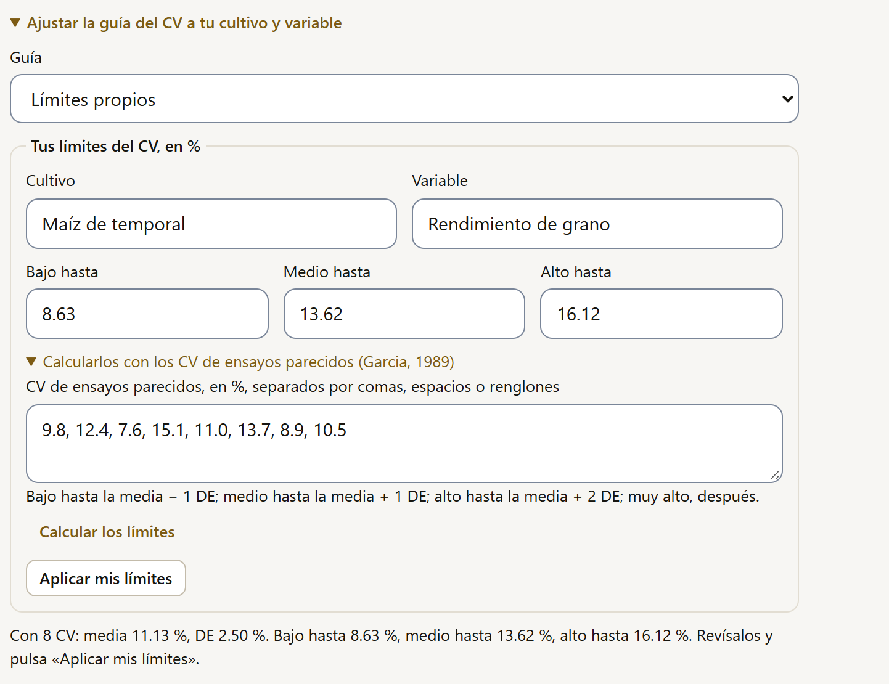
Tres niveles de detalle
Bajo el título de cada resultado, y en la cabecera del reporte, tres botones eligen cuánto se ve. El nivel vale para toda la app (Análisis, Explorar y el reporte) y se recuerda en el navegador. No cambia ningún número ni lo que se exporta.
| Nivel | Qué se ve |
|---|---|
| Básico | En pocas palabras en lugar de la conclusión con la estadística (si el análisis no trae el recuadro, la conclusión), las gráficas, el semáforo, Cómo reportarlo (APA) y, abierta bajo el nombre de cada cuadro («Lectura · Cuadro 1. …»), su lectura: medidores, tarjetas y curvas (figura 4.12). Los cuadros con sus notas y botones, el código R y los detalles técnicos se ocultan; un cuadro sin guía de lectura no aparece. En Explorar el cuadro es el resumen mismo y se ve siempre. |
| Estándar | Todo el resultado, como se describe en esta sección. Es el nivel con que abre la app. |
| Experto | Lo de Estándar más las Notas técnicas: método, entradas, opciones, datos, filas usadas, programa y tiempo de cálculo, con el modelo y sus hipótesis tomados de la ficha de Fundamentos (capítulo 9). Las notas, Cómo reportarlo (APA) y el código R aparecen abiertos (figura 4.13). |
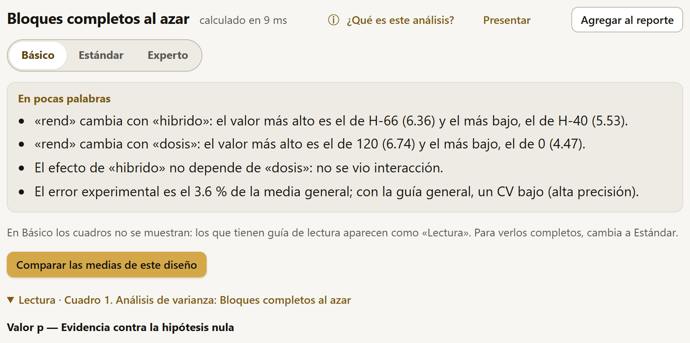
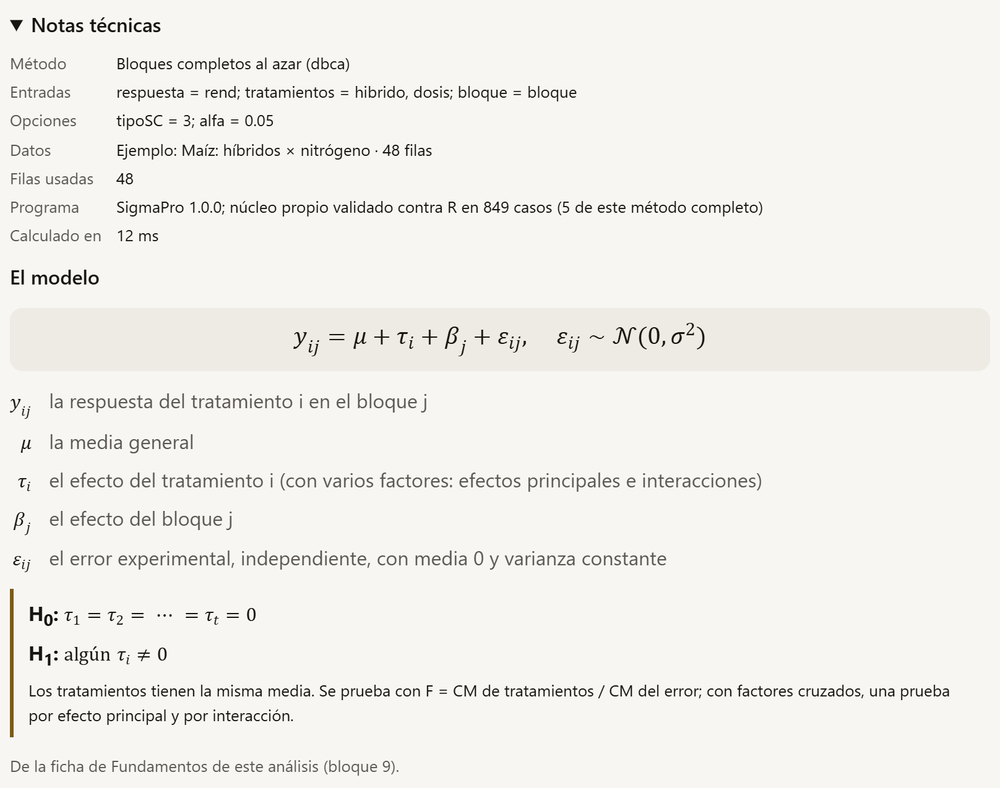
En pocas palabras
Sobre la conclusión, un recuadro dice el resultado sin símbolos estadísticos, en hasta cuatro frases, para quien no lee un cuadro de análisis de varianza (figura 4.7). No calcula nada nuevo: lee lo que ya dio el análisis.
- En los diseños experimentales se arma con el cuadro del ANOVA y las medias de cada factor: qué factor cambia la respuesta, con su nivel más alto y el más bajo y sus medias; si hay interacción; y la precisión del ensayo, con el CV y su guía. Un factor sin efecto al α del análisis se dice así: «Con estos datos no se ve que…»; con dos niveles, cuál es mayor. Si hay interacción, el recuadro aconseja comparar las medias de un factor dentro de cada nivel del otro.
- En los demás análisis son las frases de la conclusión sin los paréntesis ni las partes con estadística (F, t, p, grados de libertad, intervalos). Se descartan las frases que sin la estadística no dirían nada y las técnicas, como la de las letras en común.
Conclusión: La media de «A» (0.314) difiere de la de «B» (0.677): diferencia −0.362 (IC 95 %: −0.572 a −0.153); t = −3.729, gl = 13.21, p = 0.002. Tamaño del efecto grande: g de Hedges = −1.470 (IC 95 %: −2.342 a −0.572).
En pocas palabras: La media de «A» (0.314) difiere de la de «B» (0.677). Tamaño del efecto grande.
En el nivel Básico se ve el recuadro y se oculta la conclusión técnica; en Estándar y Experto se ven los dos. El recuadro va en Análisis y en el reporte; en Explorar no hace falta, porque ahí la conclusión ya va en palabras.
Cómo reportarlo (APA)
Después de los cuadros, el desplegable Cómo reportarlo (APA) trae el párrafo de Métodos y el de Resultados del análisis, los mismos del reporte (sección 5.4), con las convenciones del estilo APA 7 (figura 4.14):
- los símbolos estadísticos en cursiva (F, t, p, r, n, M…); las letras griegas, no;
- el p y los estadísticos que no pueden pasar de 1 (r, R², η², V de Cramér, κ, W de Kendall) sin el cero inicial: F(2, 33) = 60.63, p < .001; R² = .969;
- comas entre los estadísticos de un mismo paréntesis, los intervalos de confianza entre corchetes (en la prueba t de los venenos, IC 95 % [−0.5722, −0.1528]) y la media como M;
- en inglés, el porcentaje pegado a la cifra (3.6%); en español, separado (3.6 %).
![Cómo reportarlo (APA) abierto bajo el análisis del maíz, en la pestaña English: Methods, con el análisis de varianza para un diseño de bloques completos al azar con arreglo factorial hibrido por dosis 3 × 4, la cita de Gomez and Gomez (1984) y las sumas de cuadrados tipo III; Results, con F en cursiva y sus grados de libertad, p sin cero inicial, como p menor que .001 y p igual a .220, la media general 5.938, el coeficiente de variación 3.6% y R² igual a .969; un botón Copiar bajo cada párrafo y la nota sobre el estilo APA 7](../img/b4-reportar.png)
Las pestañas Español y English cambian el idioma del texto, no el de la app: el párrafo se arma con las mismas cifras y con los nombres de los métodos, de los diseños y de las citas en ese idioma (la primera vez que se pide el inglés, la app lo carga en un instante). Copiar, bajo cada párrafo, lo copia con sus cursivas, que un procesador de textos conserva al pegarlo. Como en el reporte, es un punto de partida: conviene revisar la redacción, cambiar los nombres de las columnas por nombres completos y agregar la interpretación agronómica.
El desplegable está en Análisis, en la revisión de los supuestos (sección 4.7), en Explorar y en cada análisis del reporte. Se arma al abrirlo, así que no hace más lento el resultado; en el nivel Experto aparece abierto.
En el bloque Análisis el resultado se explora: se cambian opciones, se prueban modelos. Al agregarlo al reporte (capítulo 5), SigmaPro le suma lo que pide un documento: los párrafos de todos los análisis en un solo texto, con la cita de cada prueba y la de SigmaPro, los detalles técnicos y la numeración de cuadros y figuras de todo el reporte.
Presentar el resultado
El botón Presentar, en el título del resultado, lo muestra como diapositivas a pantalla completa y con letra grande, para proyectarlo en una clase o en una reunión sin armar una presentación aparte. Cada parte del resultado es una diapositiva, en el orden en que está: el título, En pocas palabras, la conclusión, cada gráfica y cada cuadro con sus notas (figura 4.15). Se presenta lo que se ve en el nivel de detalle elegido: en Básico no hay cuadros, y lo que está plegado no entra.
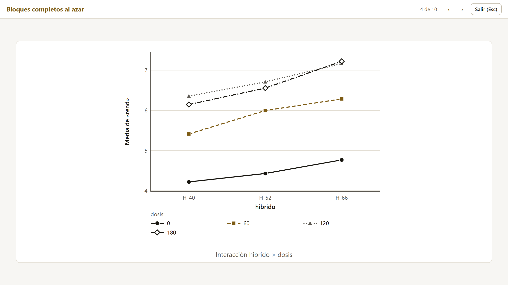
Las flechas ← y → (o Re Pág, Av Pág y la barra espaciadora) cambian de diapositiva; Inicio y Fin van a la primera y a la última; Esc sale y deja el foco en Presentar. Las diapositivas son copias sin botones: no cambian el resultado. El mismo botón está en Explorar (sección 3.2) y en la cabecera del reporte, donde presenta todos los análisis seguidos, con el nombre de cada uno en la barra (sección 5.2).
Cuando no se puede calcular
Si un análisis no se puede calcular con los datos y las opciones elegidas, en lugar del resultado aparece un recuadro con qué pasó, en palabras, y Qué hacer:, el arreglo (figura 4.16). Es el mismo en Análisis, en Explorar y en el reporte.
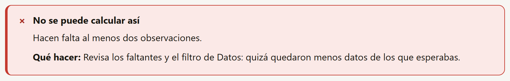
- Un problema de los datos (una columna que debe ser numérica, una que ya no existe, una en dos papeles, pocos datos, un factor que quedó con un solo nivel) trae su arreglo. Casi siempre está en Datos: el tipo de la columna, los faltantes o el filtro.
- Un error del motor R (sección 4.6) se dice en palabras cuando es uno de los conocidos de los modelos mixtos: un efecto aleatorio con un solo nivel o con tantos niveles como observaciones, una respuesta que vale lo mismo en todas las filas, un modelo que no converge o que es demasiado complejo para los datos. El texto original de R queda debajo, en Detalle técnico, plegado y con Copiar el detalle.
- Un error del programa se dice así: no es un problema de los datos. El recuadro sugiere cambiar alguna opción o recargar la página y, si se repite, avisar con el ícono Reportar un problema del encabezado (el 6 de la figura I.1), pegando el detalle técnico.
4.6El motor R dentro del navegador
Casi todos los análisis de SigmaPro están programados en el propio núcleo de la app, en JavaScript, y validados contra R. Unos cuantos, los que piden la maquinaria de ajuste de los modelos mixtos, corren en un R completo que funciona dentro del navegador (webR, R compilado a WebAssembly): los modelos lineales mixtos y sus diseños (sección 4.15), las medidas repetidas y los modelos lineales generalizados mixtos (sección 4.17). Los datos tampoco salen del equipo: R corre en la misma pestaña.
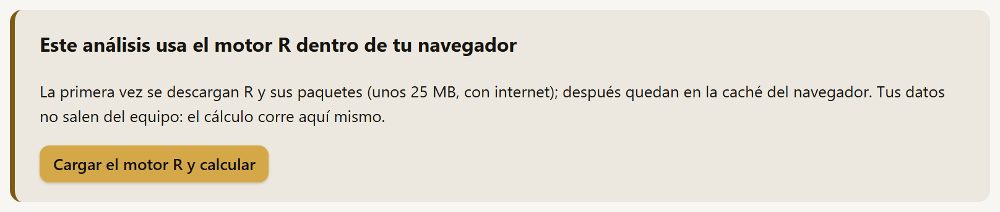
- La primera vez, en lugar del resultado aparece el aviso de la figura 4.17. Cargar el motor R y calcular descarga R y sus paquetes (unos 25 MB) y calcula.
- Mientras tanto, arriba del resultado se lee cada paso («Descargando el motor R (la primera vez tarda más)…», «Instalando lme4 en el motor R (solo la primera vez)…», «Calculando en el motor R…») y un botón Cancelar. La primera carga tarda de unos segundos a un par de minutos, según la conexión; un cálculo, unos segundos.
- Después, el motor queda en la caché del navegador: ya no hace falta internet ni vuelve a preguntar.
Cuando SigmaPro se usa publicado en una página web (no con doble clic), trae su propio repositorio del motor R y funciona sin internet desde la primera visita (introducción I.7).